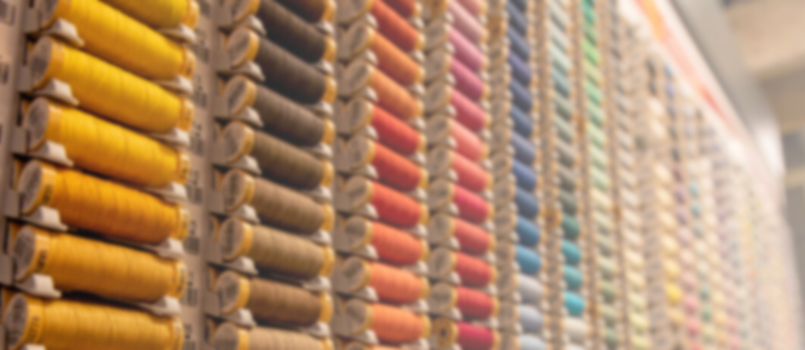

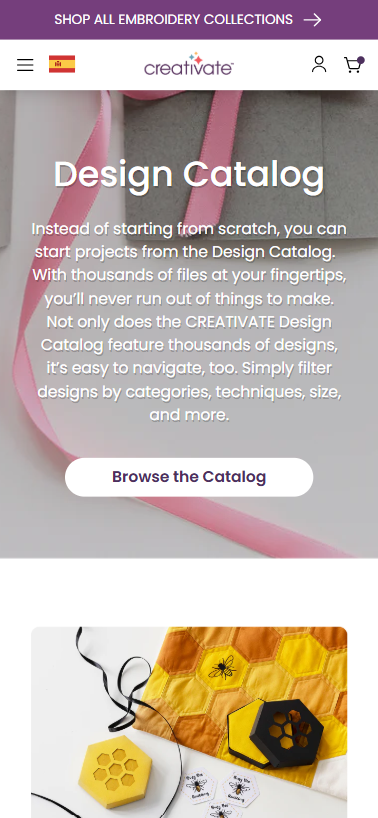
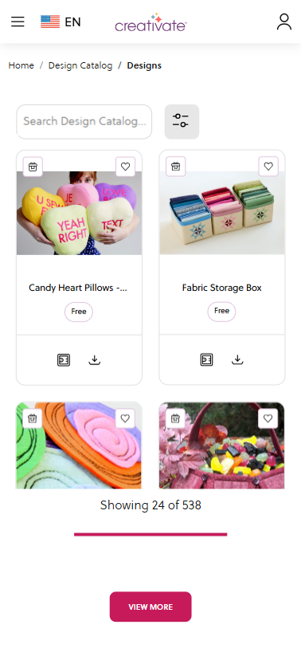
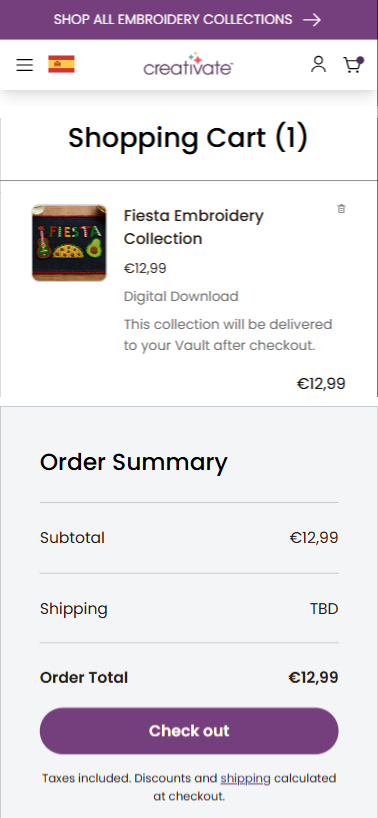
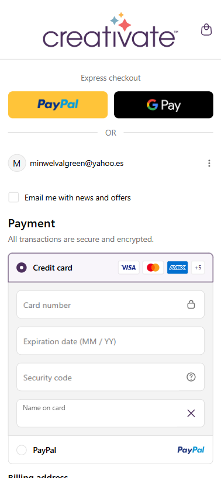
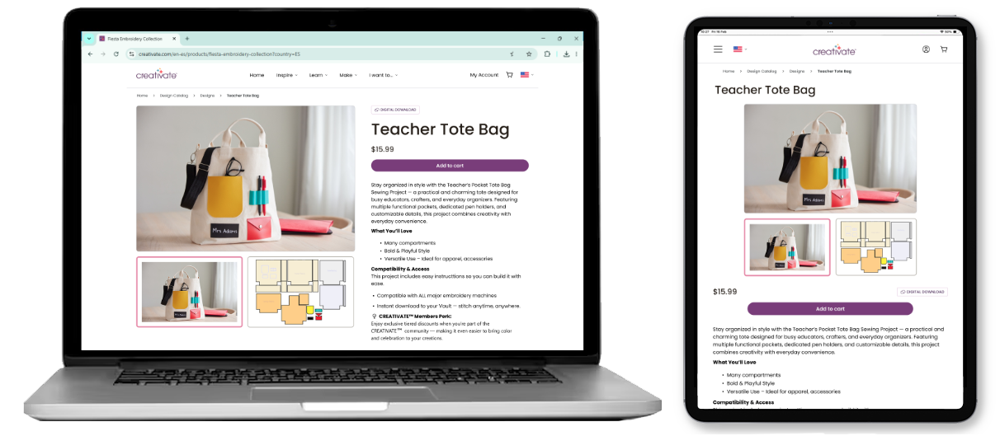
The company digital ecosystem, formerly known as mySewnet, was rebranded to CRAETIVATE. It also extended to new creative fields and the related digital tools.
The Design Catalog Store is the commercial heart of a the broad creative ecosystem that connects the user to their tools, files and machines in one seamless experience.
Whether browsing as a free user, making a one-off purchase, or exploring the full catalog as a subscriber, every interaction is designed around a single goal: getting the right design into the right hands, and from there craft it into the real world.
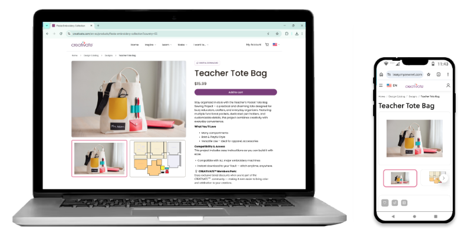
| Type of Project | Web Store |
| Platforms | Browser based and embedded into app |
| Goal | Build a site where the user can browse, purchase and send designs |
| My Role | Product Designer |
| Duration | 6 months |
| Team | Marketing Team, Project Manager,, Development Team |
| Tools | Figma, FigJam, Illustrator, Miro |
EMPATHIZE
A DUAL SITE MODEL
The main peculiarity I had to deal with in this project was the fact that it had to be designed to work in 2 ways:
Subscription
While a subscription is activeusers have access to any item
Purchase
Pay for items and keep them foreverwithout a subscription running
PEOPLE WITH DIFFERENT INTERESTS
The catalog will include contents that suit users with different creative interests. This is something that must be taken into consideration in the way things are initially displayed, and means to filter out content will be needed.
Sewist
Tailors and creators of objects with fabricEmbroiderists
People who like to add ornamental embroideryCrafters
Builders of projects with crafting machinesQuilters
Users that are enthusiasts of quiltsDEFINE
IDEATION
A PLACE FOR EACH TYPE OF USER
As a mean to consider the different user profiles It was necessary to include at the landing page right under hero image, shorcuts that focused on each creative path.
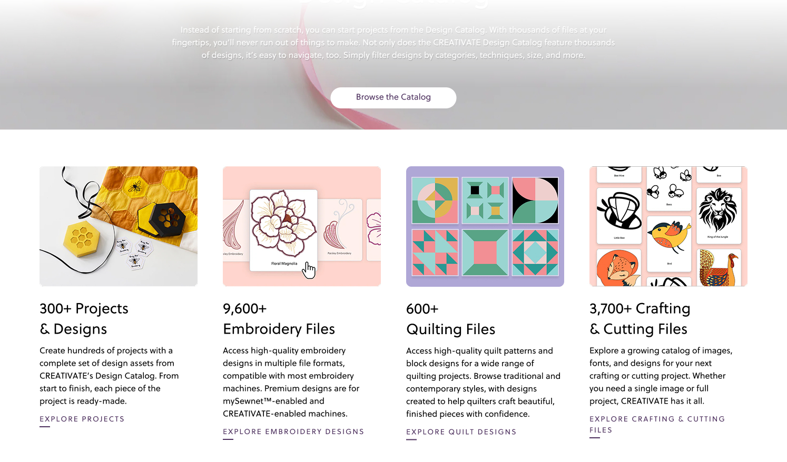
ITEM CARDS
At the moment of designing the items cards we had to show several aspects: the creative group it blonged to, and its availability type (Free/ Subscription / Purchase). Additionally the item can be connected to the user storage and machines from here, so shortcuts for this actions are needed.
A SIMPLE CHECKOUT
The checkout flow for any item available for purchase should follow a set of single steps aligned with the ecommerce standards:
Items that can be purchased will show an "Add to cart" CTA button
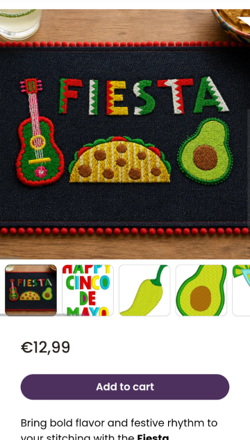
Cart view with the list of items and the order total ammount
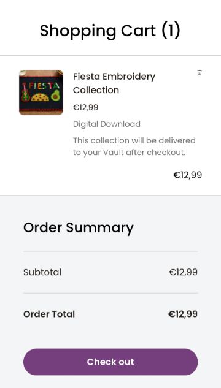
Payment page with several pay options including express checkout
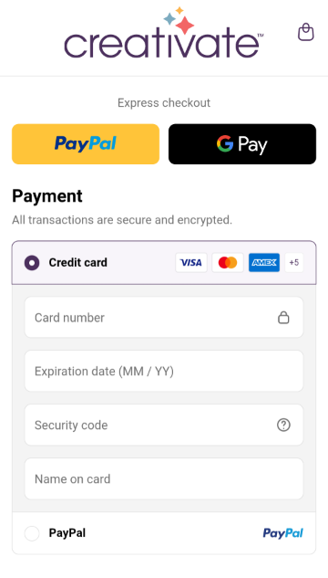
DEFINING SUBSCRIPTION PLANS
As part of the general rebranding we reimagined the page where the different subscription levels are defined: the goal was to find a balance between being descriptive about what each plan was offering and displaying it in a way that is not visually overwhelming. We replaced the previous design where a huge table with checkmarks and deffinition of features was describing the plans in too much detail, with a new incremental method where a tier contains all the features described before, and new ones.
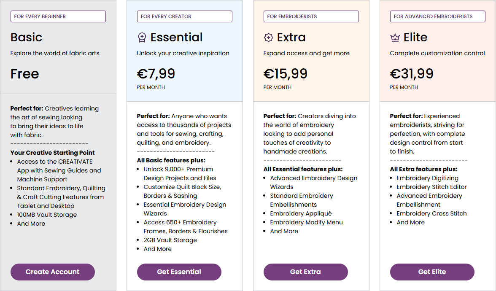
PROTOTYPING
PROTOTYPE
TESTING
USABILITY TESTING
We ran moderated remote sessions with 8 participants (embroidery enthusiasts and crafting machine users) asking each to complete 2 tasks: finding a free design and purchasing it, and upgrading their subscription.
Participants repeatedly opened item detail pages just to confirm whether something was included in their plan, a pattern that directly informed the card redesign.
A/B TESTING
Two variants of the subscription tier page were tested against the original. Variant A used simplified, benefit-led language; variant B kept more detail but reorganised the layout. Both outperformed the control, with variant A stronger among new visitors and variant B resonating more with returning free users.
CONCLUSIONS
RESULTS
After the design and validation phases, testing with crafters across both personas showed strong improvements in clarity, confidence, and task completion across the three core areas of work.
Channeling the users interests into tailored landing experiences increased the feeling that the platform was built for them.
Redefined tier descriptions led to a drop in hesitation at the paywall. Users reported clearer expectations of what each plan included before committing.
The card system, access logic, and content taxonomy established patterns ready to scale across future categories.
Connectivity shortcuts on cards reduced the steps to send a design to a device, turning a previously multi-step task into a single interaction.
LEARNINGS
This project taught me that designing for a dual business model is not just an UX problem: it involves balancing user trust and commercial strategy, forces that don't always point in the same direction. One of my biggest challenges was advocating for free users' experience at moments where business pushed toward more aggressive conversion patterns.
Getting the language around subscription tiers right took far more iteration than I expected, and it was only through testing that I understood how much a single poorly chosen word could make a user feel excluded rather than invited.